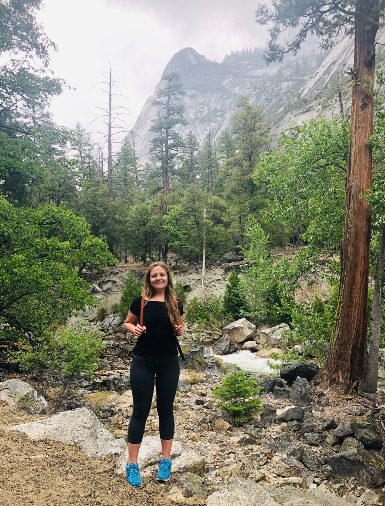
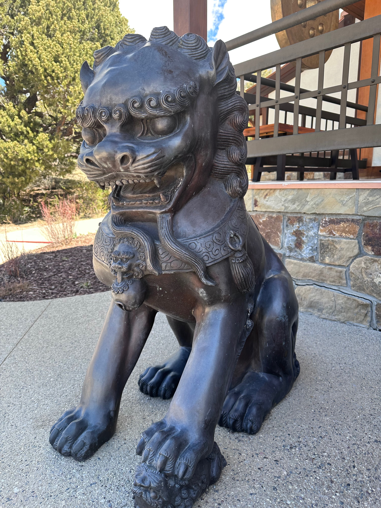
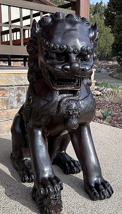
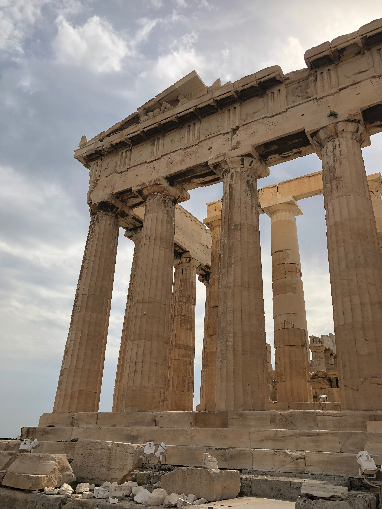

Product designer and project manager with roots in psychology and art
I take work from the first round of user research all the way through delivery, and I keep clients and teams aligned as it moves. Below is a bit about how I got here and how I like to work.

I studied psychology at Fairhaven College, an interdisciplinary liberal arts school where learning was hands-on and students shaped their own degrees. I built mine around mindfulness-based art therapy, which brought my art and my interest in human behavior into the same place.
Between Fairhaven and UX, I worked in administration for the Figgins family, the founding wine family of the Walla Walla Valley, at Figgins Family Wine Estates and Leonetti Cellar. Much of my job was making buying, shipping, and receiving easy for customers while staying true to a brand people knew and cared about. Every bottle had years of work behind it, and I didn't want a clumsy ordering process to be what someone remembered.
So when I started at General Assembly in 2019, user research felt familiar. I'd spent years asking why people do what they do, and wine had taught me how much small details shape someone's experience of a product.


I picked up this craft after a shipment of antique Buddhist statues arrived water damaged, and I've been restoring them ever since.

History, delicious food, and being somewhere long enough to meet the culture.
It slows me down. I notice more when I'm looking for a photograph.
Before I design anything, I want to understand who it's for and what's getting in their way. I've seen teams skip that step and end up solving the wrong problem. The method depends on the project. Sometimes that means user interviews or usability testing, and other times a competitive audit, or a card sort to see how people naturally group things.
AI is part of how I work, from ideation through design, and most of my recent freelance work has been with AI startups. At Consciens.ai, I do both product design and project management. I keep the roadmap and timelines on track and work alongside the design team on the product itself. Through Mercor, I grade AI-generated design and writing for quality.
Managing projects and stakeholders has made me pay closer attention to what happens after a design is approved, when it's being built and developers start asking questions.
Open to full-time, part-time, and contract roles.
Based in Boulder, CO and available remotely across the US.